My Projects
Proyek Tanya Jawab PDF Putusan Pengadilan
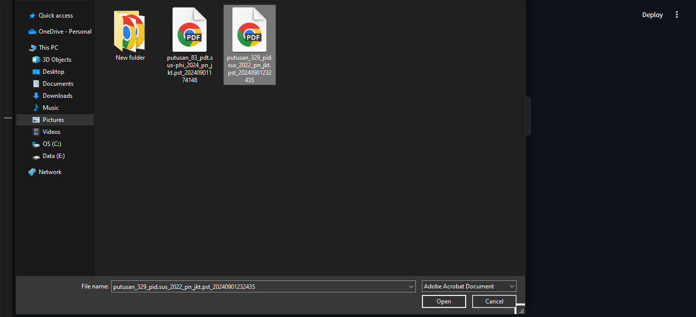 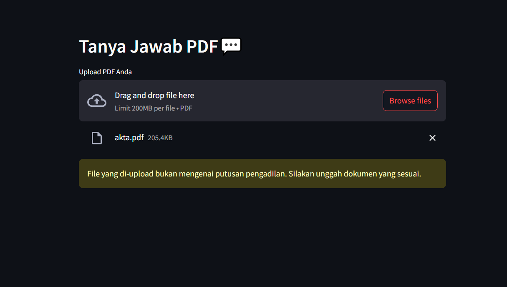 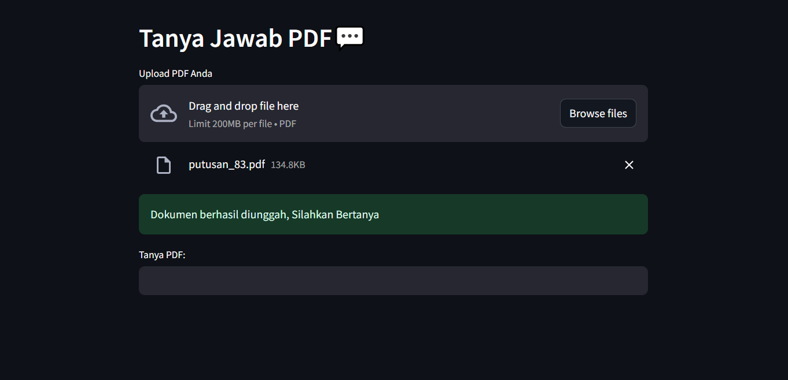 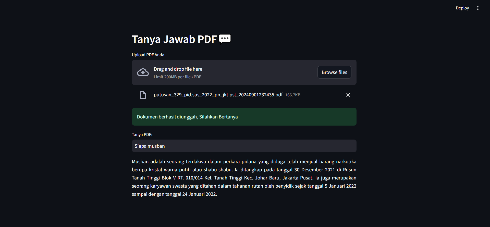Proyek ini bertujuan membangun sistem pencarian cerdas berbasis dokumen PDF putusan pengadilan. Langkah pertama dimulai dengan mengonversi file PDF menjadi teks, lalu dilakukan validasi dan pembersihan untuk memastikan hanya konten yang relevan yang diproses. Teks yang telah divalidasi kemudian dibagi menjadi beberapa bagian kecil (chunk) menggunakan CharacterTextSplitter dari LangChain. Proses ini bertujuan agar informasi yang diindeks tetap kontekstual dan optimal saat digunakan dalam pencarian semantik. Selanjutnya, setiap chunk teks diubah menjadi vektor embedding menggunakan OpenAIEmbeddings, dan diindeks ke dalam FAISS, sebuah pustaka pencarian berbasis kemiripan vektor. Hal ini memungkinkan sistem untuk mengembalikan bagian teks yang paling relevan dengan pertanyaan pengguna secara cepat dan akurat.
View on GitHubProyek Twitter Clone
Aplikasi seperti Twitter berbasis Flutter dan Appwrite, tanpa fitur direct message.
View on GitHubProyek AI
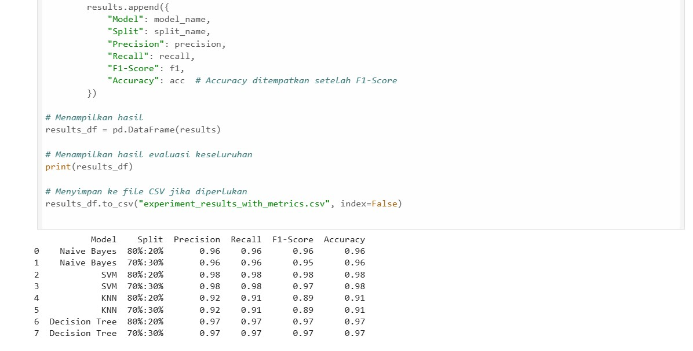 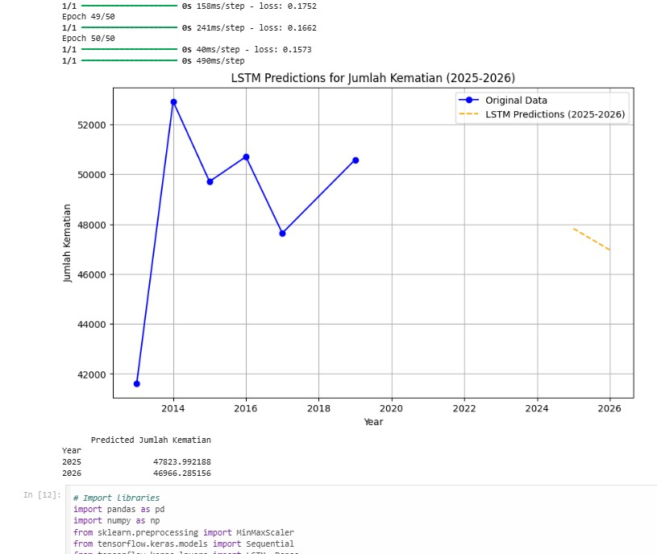Proyek ini merupakan kumpulan implementasi dari topik-topik Artificial Intelligence (AI), Natural Language Processing (NLP), dan Machine Learning, yang dikembangkan sebagai bagian dari tugas mata kuliah terkait kecerdasan buatan.
View on GitHubText Summarization
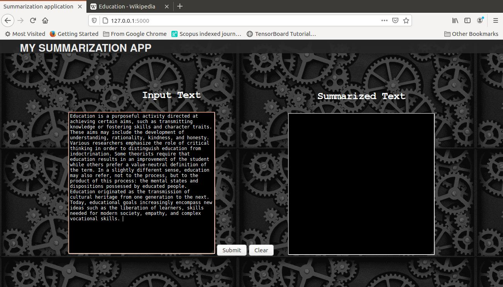 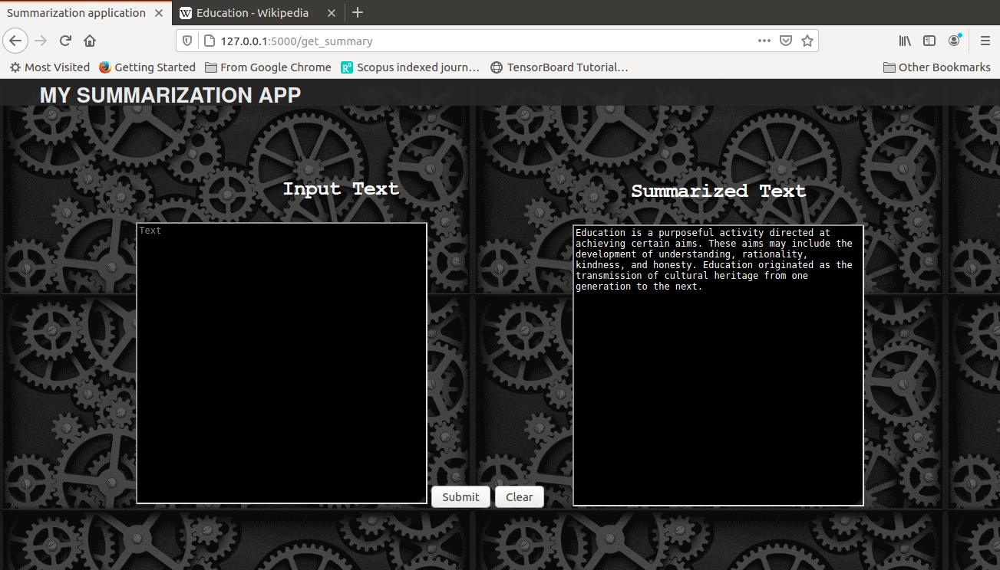 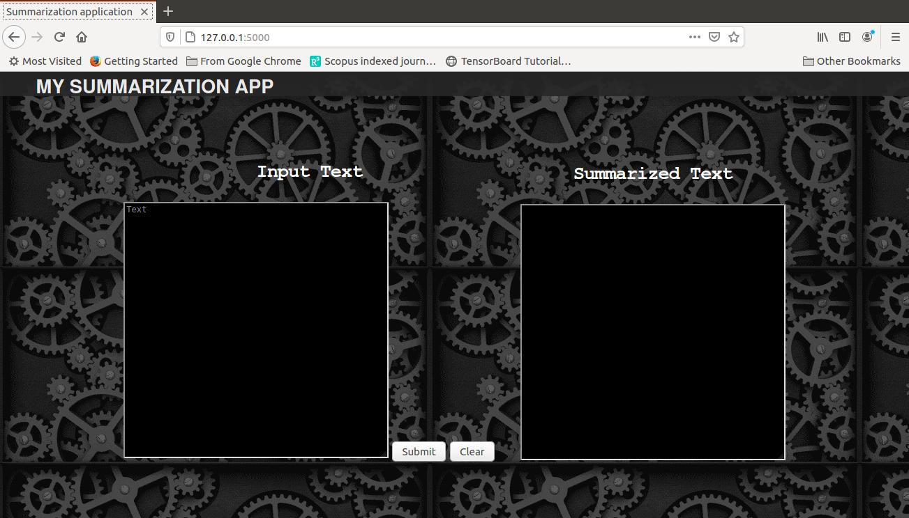Proyek ini adalah aplikasi web sederhana yang dikembangkan untuk melakukan ringkasan otomatis (text summarization) menggunakan Python. Aplikasi ini dibangun dengan menggunakan Flask sebagai web framework dan memanfaatkan model NLP seperti Transformers dari Hugging Face untuk melakukan ekstraksi ringkasan dari teks panjang yang diinput oleh pengguna.
View on GitHubProyek Game Mobile dengan menggunakan unity


Proyek ini dikerjakan dalam memenuhi tugas mata kuliah mobile programming dengan menggunakan pemrogramana C#
Proyek Game Tetris menggunakan pemrograman Java
.png)
.png)
Proyek ini merupakan implementasi dari permainan klasik Tetris menggunakan bahasa pemrograman Java. Aplikasi dikembangkan dalam lingkungan NetBeans IDE, dengan antarmuka grafis yang menampilkan elemen-elemen permainan seperti grid, blok warna-warni, dan pergerakan real-time. Pola atau bentuk balok tetris divisualisasikan menggunakan asset gambar (image assets) yang diatur dalam sistem tampilan permainan. Proyek ini menunjukkan kemampuan dalam pemrograman berbasis objek, pengelolaan antarmuka grafis, serta logika game seperti rotasi balok, deteksi tabrakan, dan pembersihan baris. Penggunaan Java Swing memungkinkan tampilan game interaktif yang responsif.
View on GitHubProyek UI & UX order food
.png)
.png)
Proyek ini dilakukan dalam tim atau kelompok dalam memenuhi tugas akhir mata kuliah technopreneurship yang dirancang dengan Figma
Proyek WEB programming UTS pencari pekerjaan
.png)
.png)
Proyek ini merupakan hasil kolaborasi tim mahasiswa dalam rangka Ujian Tengah Semester (UTS), yang bertujuan untuk membangun sebuah aplikasi web sederhana yang meniru fungsi dasar dari platform pencarian kerja seperti JobStreet. Dalam pengembangannya, proyek ini menggunakan Node.js sebagai lingkungan runtime, serta Express.js sebagai framework backend untuk menangani routing dan logika server. Untuk sisi tampilan, digunakan EJS (Embedded JavaScript Templates) yang memungkinkan halaman web dirender secara dinamis menggunakan data dari server.
Analisis data covid 19 dengan python
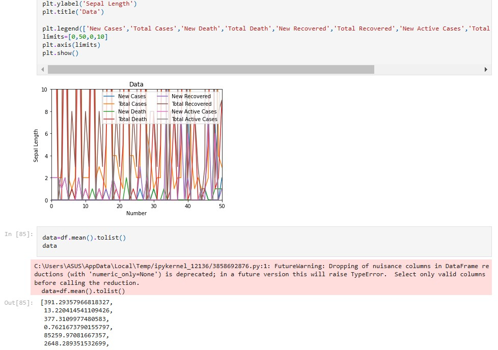 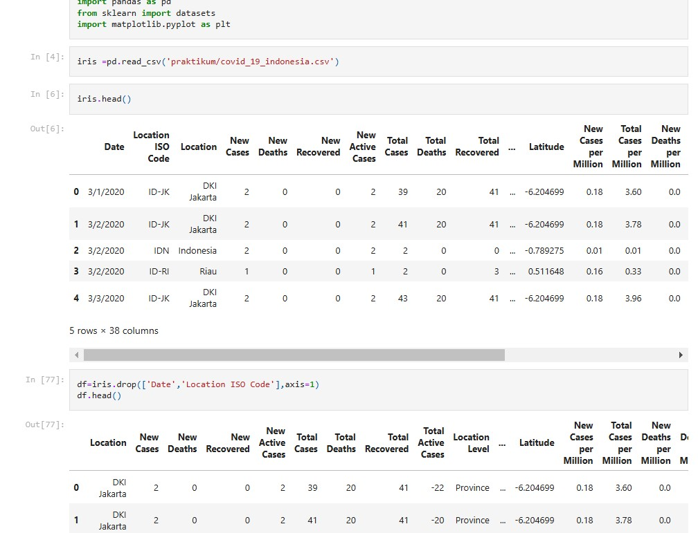
Proyek ini merupakan bagian dari tugas akhir mata kuliah Big Data yang berfokus pada analisis data COVID-19 di Indonesia menggunakan Python. Data yang dianalisis berasal dari dataset covid_19_indonesia.csv, yang memuat informasi kasus harian dan kumulatif COVID-19 berdasarkan wilayah di Indonesia. Dalam pengerjaannya, proyek ini menggunakan berbagai pustaka Python seperti Pandas untuk manipulasi data, serta Matplotlib dan Seaborn untuk membuat visualisasi tren kasus. Proses analisis dilakukan melalui Jupyter Notebook sebagai lingkungan interaktif yang memungkinkan dokumentasi dan eksekusi kode secara terstruktur. Analisis yang dilakukan mencakup visualisasi tren kasus harian, total kasus, dan penyebaran per wilayah, guna memberikan gambaran menyeluruh terhadap situasi pandemi di Indonesia dalam kurun waktu tertentu.
Admin Website Qwertaka.com
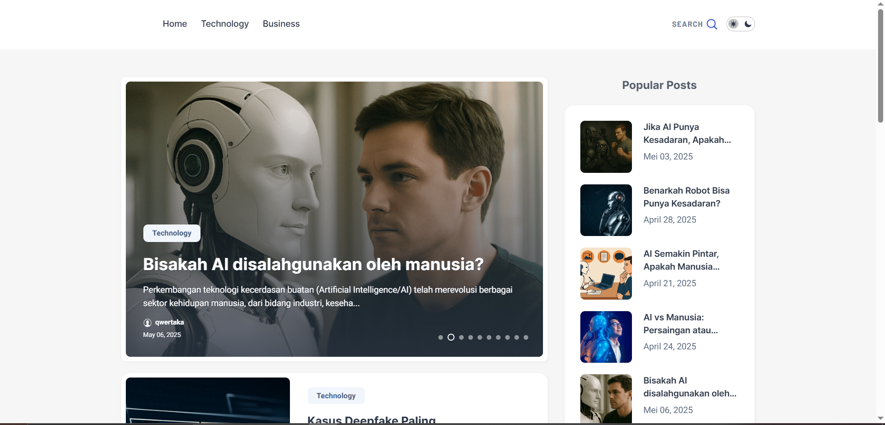qwertaka.com adalah sebuah situs web pribadi yang dikembangkan sebagai wadah untuk berbagi wawasan, opini, dan eksplorasi seputar teknologi, kecerdasan buatan (AI), tren digital, serta pengembangan diri di era modern. Situs ini dibangun menggunakan platform Blogger yangkemudian saya modifikasi dengan pendekatan desain yang responsif dan SEO-friendly, agar dapat diakses dengan optimal di berbagai perangkat dan mudah ditemukan melalui mesin pencari.
View SiteText Summarizer
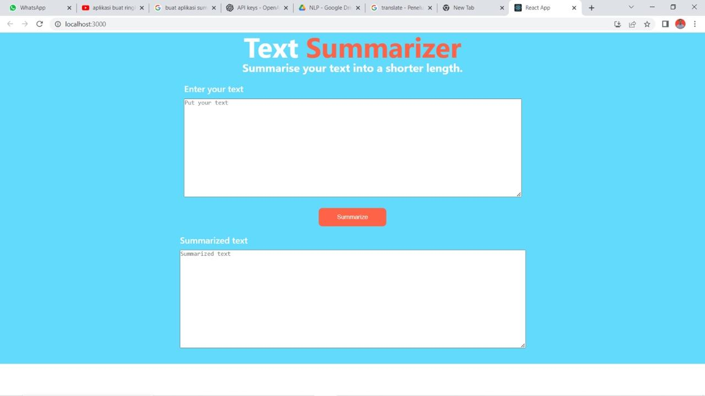 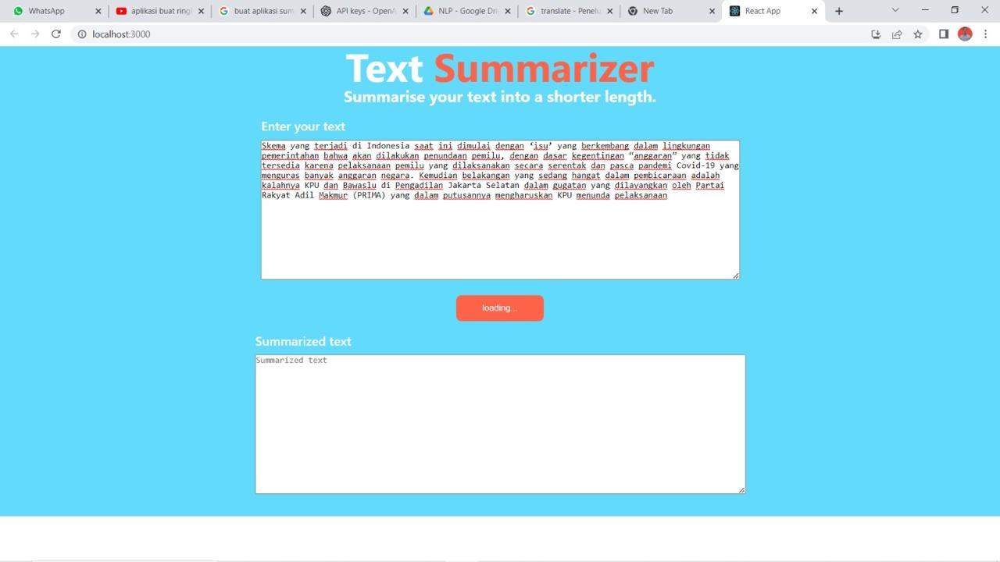Proyek membuat aplikasi Text Summarization (ringkasan teks) menggunakan React di sisi frontend dan ChatGPT (OpenAI API) sebagai backend untuk merangkum teks panjang menjadi ringkas secara otomatis.
View Github